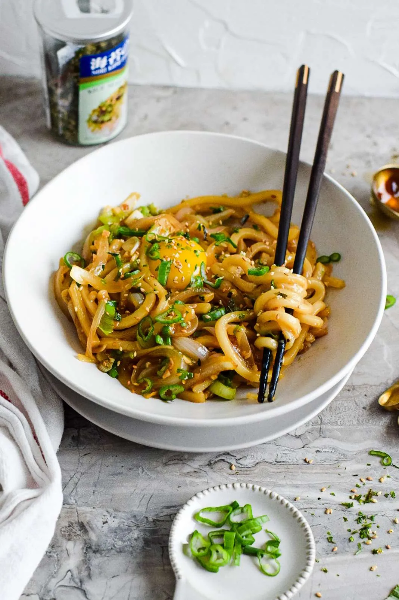
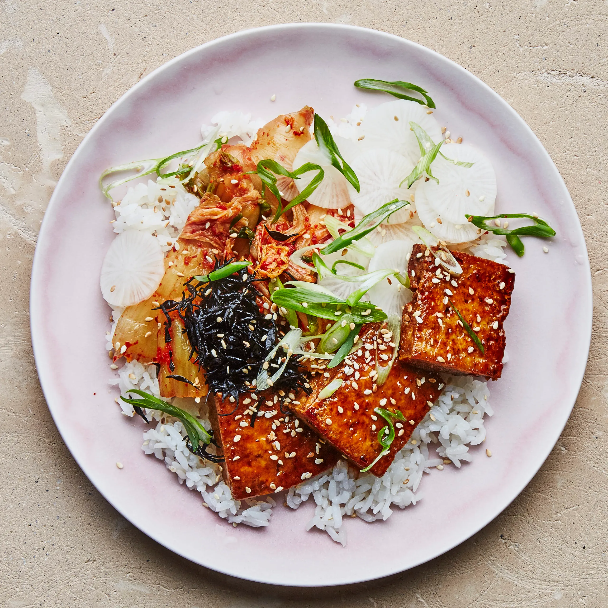

Favorite Recipes to Try at Home
Here are a few simple ideas inspited by our menu:
-
Garlic Butter Udon

Udon noodles stir fried with garlic, soy sauce and scallions. -
Ginger Soy Glazed Tofu

Pan fried tofu cubes with soy, ginger, and honey glazed.